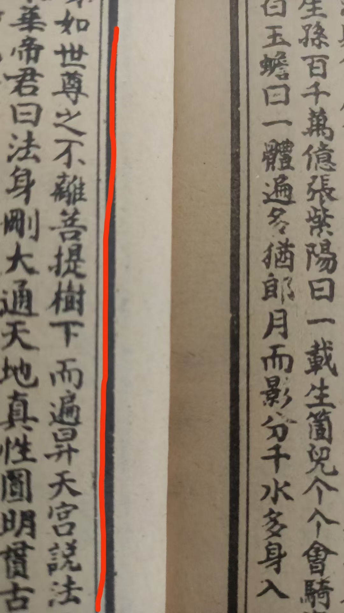
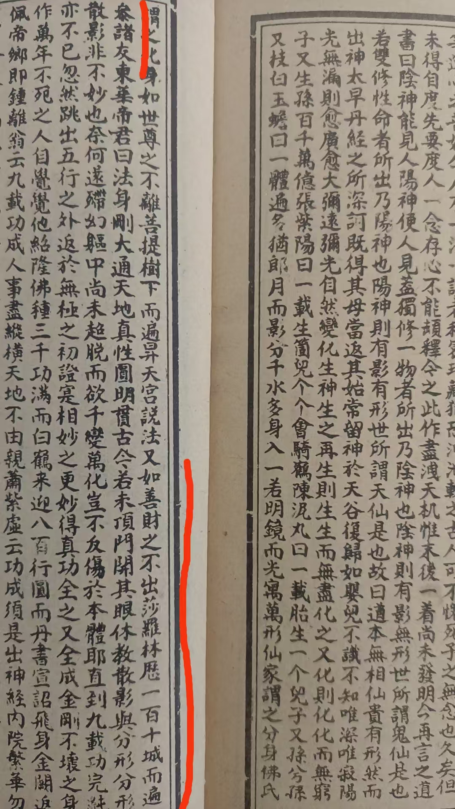
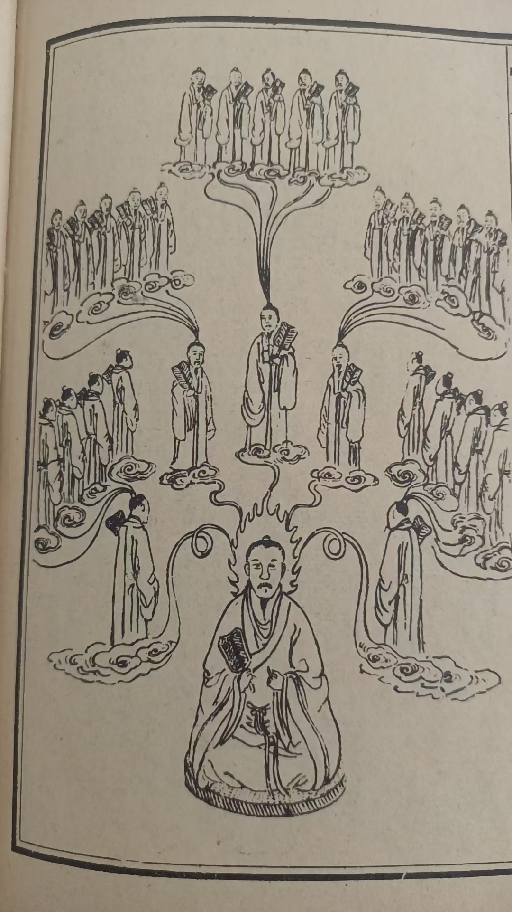
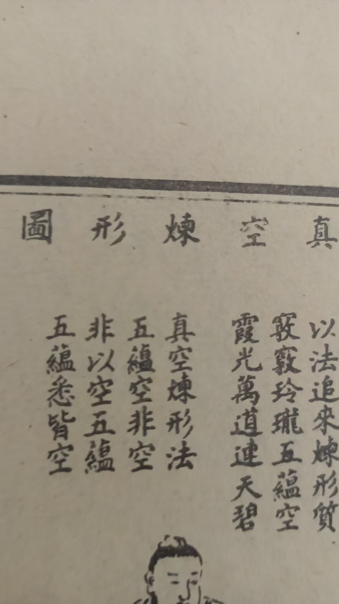

20260524打坐，要清晰的看到自己所做
修炼修行 原始对话记录

必须长时间入定
打坐到感觉不到自己了
这叫空觉
划线的几句
释迦牟尼，在菩提树下打坐
遍升天宫说法，而实际并没有离开这菩提树
啥意思，分身去了
第二句，经里说善财，走了一百多城，遍参诸友，学的成佛之法，但是人并没有走出莎罗林
师父，打坐的时候总感觉是睡着了，就是有一时间段没有任何的思想了

打坐，要清晰的看到自己所做
空觉，非常清晰，感觉不到自己存在，有感觉到周围都是空明
有一部分清晰，有一部分什么感觉都没有了
空觉，妙觉
时间短了，进不了状态
所以，元音心中心法，要求两小时入门
八小时勤修
太难坚持了
枯坐也要坐够八小时
世上无难事，只怕有心人
双盘能坐半小时太难
[憨笑][憨笑][憨笑]
半小时也在一直喊腿疼
无用功，
只能算基本功
还不扎实
我逐渐延长双盘时间，下一步双盘坐睡觉

真空炼形
咱们只见到玉液还丹炼形
九转还丹炼形
这个真空炼形
就是搬运自己
真我离开肉身，搬运这个肉身形壳
一层一层细细参悟
开了智慧，一切修行法门心知肚明
不用等我说一句，练一句
用心参悟
打坐的空觉与妙觉：清楚，而不是睡过去
一、本页在说什么
本页的核心是一句话："打坐，要清晰地看到自己所做。" 记录把入定中的状态分成两类——空觉与妙觉；又借经文里"分身"的说法，说明入定深时会发生什么；最后落在现实层面：久坐的门槛、双盘之难，以及"真空炼形"的设想。本文按这几条依次说清。
二、空觉与妙觉：清楚而不散乱
本页对"空觉"的描述是：非常清晰，感觉不到自己存在，又感觉周围都是空明；"有一部分清晰，有一部分什么感觉都没有了"。与之相对的妙觉，本页没有展开定义，但从语境看，指的是入定中那种明了而不昏沉的状态。要点在于——本页特意把它和"睡着了"区分开：
问者说："打坐的时候总感觉是睡着了，就是有一时间段没有任何的思想了。" 本页的提醒：那是昏沉、断片，不是入定；入定是"清晰地看到自己所做"，不是什么都不记得。
速查对照：
| 状态 | 是否清楚 | 本页判断 |
|---|---|---|
| 空觉 | 清楚（感觉不到自己、周围空明） | 入定 |
| 妙觉 | 清楚、明了 | 入定 |
| 昏沉断片 | 不清楚、无记忆 | 睡着，非入定 |
三、经文里的"分身"之说
本页引了两句：释迦牟尼在菩提树下打坐，"遍升天宫说法，而实际并没有离开这菩提树"；又引经文说善财"走了一百多城，遍参诸友"，而人并未走出娑罗林。本页的解读是"分身去了"——属宗教文本的表述，本文照录以存其意，不作评断。
四、"必须长时间入定"
本页反复强调时长：时间短了进不了状态。它提到"元音心中心法"要求"两小时入门、八小时勤修"，并说"枯坐也要坐够八小时"。这句是关键，也最劝退人。它自己也承认"太难坚持了"。
五、双盘的现实难度与"真空炼形"
讲到腿，本页很直白："双盘能坐半小时太难"，"半小时也在一直喊腿疼"，并说这"只能算基本功，还不扎实"。作者表示要"逐渐延长双盘时间，下一步双盘坐睡觉"。至于真空炼形，本页说这是与"玉液还丹炼形""九转还丹炼形"并列的一种说法，理解为"搬运自己——真我离开肉身，搬运这个肉身形壳"，并强调要"一层一层细细参悟"。
六、常见问题
问：打坐到"没思想了"，是入定还是睡觉？ 本页明确区分：清晰、知道自己在做什么才是入定；昏沉断片是睡过去了。
问：腿疼还硬坐有意义吗？ 本页把"能坐住"看作基本功，但仍需量力而行。本站不建议以忍痛为荣，更不提供健康指导。
问：真空炼形能练成吗？ 本页只是提出这一概念并说要"参悟"，不构成任何成就承诺。
七、提醒
- 两个关键词：空觉（感觉不到自己、周围空明）、要清晰地看到自己所做；
- 本页重时长、重双盘，但以量力而行为宜；
- 打坐涉及身体反应，本站不提供医疗建议，不适请就医；
- 全站按传统文化修习记录看待，理性参考。